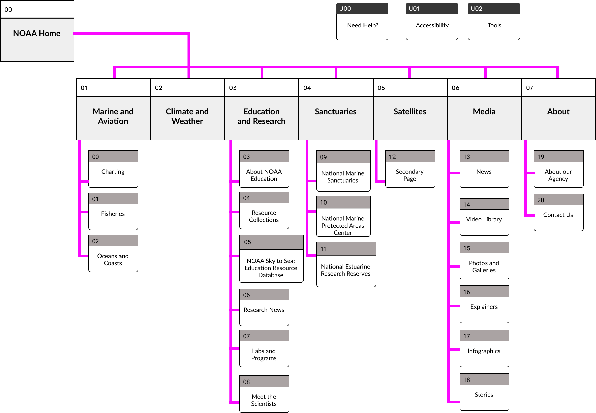

IDEATION
Card Sorting

Card Sorting the Navigation Menu

Site Map based on Card Sorting
We redesigned the NOAA's website for better accessability and navigation.

The National Oceainic and Atmospheric Administration (NOAA) is an American scientific and regulatory agency within the United States Department of Commerce that forecasts weather, monitors oceanic and atmospheric conditions, charts the seas, conducts deep sea exploration, and manages fishing and protection of marine mammals and endangered species in the U.S. exclusive economic zone.
Departments in the NOAA

Allison is a 27 years old climate activist who loves Scuba Diving & DIY Projects. She lives in Miami, Florida. She wants to raise awareness about coral reef preservation and climate change within her local community. In the age of misinformaiton, Allision hates unreliaible sources. She wants to give people concrete evidence and resources on climate change. She trusts the NOAA website to give her valid information and resources but sometimes has trouble navigating the NOAA website.

The major flaws we identfied:

Objective: Identify pain points for users navigating the NOAA Website
Tasks:
The NOAA website is difficult to navigate with an unorthodox sidebar menu that lacks universal icons and labels.
Card Sorting the Navigation Menu
Site Map based on Card Sorting
Colors and images that remind me of the NOAA
Website UI inspriation, focusing on home pages and search bars.
Rethinking the current navigation bar and other current elements
Allison is a 27 years old climate activist who loves Scuba Diving & DIY Projects. She lives in Miami, Florida. She wants to raise awareness about coral reef preservation and climate change within her local community. In the age of misinformaiton, Allision hates unreliaible sources. She wants to give people concrete evidence and resources on climate change. She trusts the NOAA website to give her valid information and resources but sometimes has trouble navigating the NOAA website.
The major flaws we identfied:

My redesign of the NOAA website homepage

The current NOAA website homepage
Website on mobile